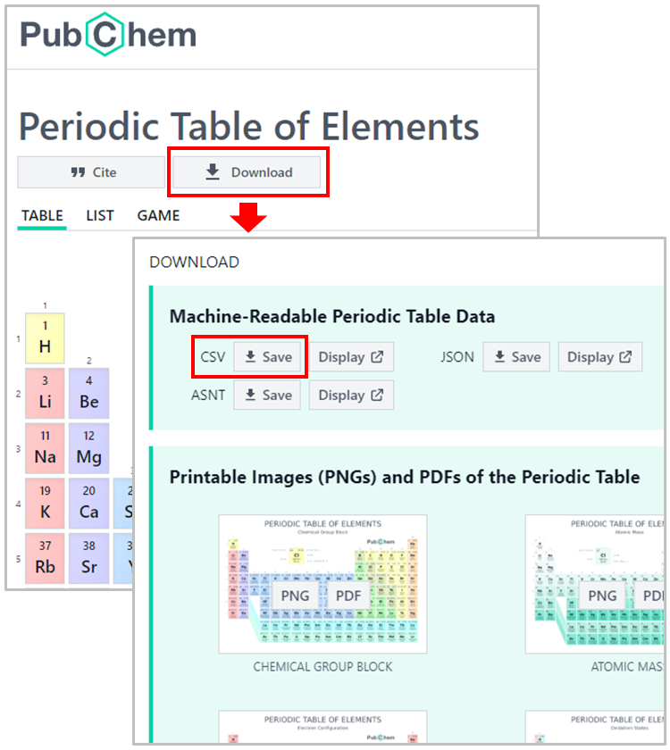

Accessing the Chemical Elements Data from PubChem#
About this interactive  recipe
recipe
Author(s): Sunghwan Kim
Reviewer: Samuel Munday
Topic(s): How to retrieve chemical data using the PubChem Periodic Table.
Format: Interactive Jupyter Notebook (Python)
Scenario: You need to access and chemical data programatically based from PubChem annotations.
Skills: You should be familar with:
Learning outcomes:
How to get atom mass information from the PubChem Periodic Table
How to get ionization energies and electronegativity data from the PubChem Periodic Table
How to get physical property data from the PubChem Periodic Table
Citation: ‘Accessing the Chemical Elements Data from PubChem’, Sunghwan Kim, The IUPAC FAIR Chemistry Cookbook, Contributed: 2024-02-14 https://w3id.org/ifcc/IFCC016.
Reuse: This notebook is made available under a CC-BY-4.0 license.
PubChem provides the Periodic Table (https://pubchem.ncbi.nlm.nih.gov/periodic-table/) and Element Pages to help users navigate the abundant chemical element data available within PubChem. More detailed information on these services is provided in the following paper:
PubChem Periodic Table and Element Pages: Improving Access to Information on Chemical Elements from Authoritative Sources
Kim et al., Chemistry Teacher International, 2021, 3(1):57-65.
DOI: 10.1515/cti-2020-0006
The data underlying the PubChem Periodic Table and Element Pages are freely available for download. This Jupyter notebook demonstrates how to download the properties of chemical elements and visualize the periodicity of those properties. The data used in this notebook can be downloaded from the PubChem Periodic Table (https://pubchem.ncbi.nlm.nih.gov/periodic-table/), by clicking the DOWNLOAD button and then the CSV button.

Alternatively, the data can also be downloaded using a python script, as demonstrated below. Here, we use a python data analysis library called pandas. Using pandas, we can directly load the data from the web into a data frame.
import requests
import pandas as pd
url = "https://pubchem.ncbi.nlm.nih.gov/rest/pug/periodictable/CSV"
df = pd.read_csv(url)
df
| AtomicNumber | Symbol | Name | AtomicMass | CPKHexColor | ElectronConfiguration | Electronegativity | AtomicRadius | IonizationEnergy | ElectronAffinity | OxidationStates | StandardState | MeltingPoint | BoilingPoint | Density | GroupBlock | YearDiscovered | |
|---|---|---|---|---|---|---|---|---|---|---|---|---|---|---|---|---|---|
| 0 | 1 | H | Hydrogen | 1.008000 | FFFFFF | 1s1 | 2.20 | 120.0 | 13.598 | 0.754 | +1, -1 | Gas | 13.81 | 20.28 | 0.000090 | Nonmetal | 1766 |
| 1 | 2 | He | Helium | 4.002600 | D9FFFF | 1s2 | NaN | 140.0 | 24.587 | NaN | 0 | Gas | 0.95 | 4.22 | 0.000179 | Noble gas | 1868 |
| 2 | 3 | Li | Lithium | 7.000000 | CC80FF | [He]2s1 | 0.98 | 182.0 | 5.392 | 0.618 | +1 | Solid | 453.65 | 1615.00 | 0.534000 | Alkali metal | 1817 |
| 3 | 4 | Be | Beryllium | 9.012183 | C2FF00 | [He]2s2 | 1.57 | 153.0 | 9.323 | NaN | +2 | Solid | 1560.00 | 2744.00 | 1.850000 | Alkaline earth metal | 1798 |
| 4 | 5 | B | Boron | 10.810000 | FFB5B5 | [He]2s2 2p1 | 2.04 | 192.0 | 8.298 | 0.277 | +3 | Solid | 2348.00 | 4273.00 | 2.370000 | Metalloid | 1808 |
| ... | ... | ... | ... | ... | ... | ... | ... | ... | ... | ... | ... | ... | ... | ... | ... | ... | ... |
| 113 | 114 | Fl | Flerovium | 290.192000 | NaN | [Rn]7s2 7p2 5f14 6d10 (predicted) | NaN | NaN | NaN | NaN | 6, 4,2, 1, 0 | Expected to be a Solid | NaN | NaN | NaN | Post-transition metal | 1998 |
| 114 | 115 | Mc | Moscovium | 290.196000 | NaN | [Rn]7s2 7p3 5f14 6d10 (predicted) | NaN | NaN | NaN | NaN | 3, 1 | Expected to be a Solid | NaN | NaN | NaN | Post-transition metal | 2003 |
| 115 | 116 | Lv | Livermorium | 293.205000 | NaN | [Rn]7s2 7p4 5f14 6d10 (predicted) | NaN | NaN | NaN | NaN | +4, +2, -2 | Expected to be a Solid | NaN | NaN | NaN | Post-transition metal | 2000 |
| 116 | 117 | Ts | Tennessine | 294.211000 | NaN | [Rn]7s2 7p5 5f14 6d10 (predicted) | NaN | NaN | NaN | NaN | +5, +3, +1, -1 | Expected to be a Solid | NaN | NaN | NaN | Halogen | 2010 |
| 117 | 118 | Og | Oganesson | 295.216000 | NaN | [Rn]7s2 7p6 5f14 6d10 (predicted) | NaN | NaN | NaN | NaN | +6, +4, +2, +1, 0, -1 | Expected to be a Gas | NaN | NaN | NaN | Noble gas | 2006 |
118 rows × 17 columns
df.shape # Check the dimension of the data frame (the number of rows, the number of columns)
(118, 17)
df.columns # Check the available information.
Index(['AtomicNumber', 'Symbol', 'Name', 'AtomicMass', 'CPKHexColor',
'ElectronConfiguration', 'Electronegativity', 'AtomicRadius',
'IonizationEnergy', 'ElectronAffinity', 'OxidationStates',
'StandardState', 'MeltingPoint', 'BoilingPoint', 'Density',
'GroupBlock', 'YearDiscovered'],
dtype='object')
In some charts generated in this notebook, data will be color-coded using the information on the period of an element (i.e., the row on the periodic table where an element appears). However, as shown in the above code cell, this information is not available in the data frame. Therefore, we add it to the data frame.
Period = [None] * 118
for i in range(0,len(Period)):
an =i + 1 # Atomic number
if (1 <= an) & (an <= 2) :
Period[i] = "Period 1"
elif (3 <= an) & (an <= 10) :
Period[i] = "Period 2"
elif (11 <= an) & (an <= 18) :
Period[i] = "Period 3"
elif (19 <= an) & (an <= 36) :
Period[i] = "Period 4"
elif (37 <=an ) & (an <= 54) :
Period[i] = "Period 5"
elif (55 <= an) & (an <= 86) :
Period[i] = "Period 6"
elif (87 <= an) & (an <= 118) :
Period[i] = "Period 7"
df["Period"] = Period
Now let’s import matplotlib and seaborn for data visualization.
import matplotlib.pyplot as plt
import seaborn as sns
sns.set_style("darkgrid")
1. Atomic Mass#
ax=sns.scatterplot(x=df.AtomicNumber, y=df.AtomicMass, color='Blue')
ax.set(xlabel='Atomic Number')
ax.set(ylabel='Atomic Mass')
[Text(0, 0.5, 'Atomic Mass')]
2. Ionization Energy, Electron Affinity & Electronegativity#
Now we want to look into the periodicity of the ionization energy, electron affinity, and electronegativity among the chemical elements. These properties are not known for some elements, especially for elements heavier than Lr (Atomic Number=103), as identified in the following code cell.
df[(df.IonizationEnergy.isnull()) & (df.ElectronAffinity.isnull()) & (df.Electronegativity.isnull())][['AtomicNumber', 'Symbol','IonizationEnergy','ElectronAffinity','Electronegativity']]
| AtomicNumber | Symbol | IonizationEnergy | ElectronAffinity | Electronegativity | |
|---|---|---|---|---|---|
| 103 | 104 | Rf | NaN | NaN | NaN |
| 104 | 105 | Db | NaN | NaN | NaN |
| 105 | 106 | Sg | NaN | NaN | NaN |
| 106 | 107 | Bh | NaN | NaN | NaN |
| 107 | 108 | Hs | NaN | NaN | NaN |
| 108 | 109 | Mt | NaN | NaN | NaN |
| 109 | 110 | Ds | NaN | NaN | NaN |
| 110 | 111 | Rg | NaN | NaN | NaN |
| 111 | 112 | Cn | NaN | NaN | NaN |
| 112 | 113 | Nh | NaN | NaN | NaN |
| 113 | 114 | Fl | NaN | NaN | NaN |
| 114 | 115 | Mc | NaN | NaN | NaN |
| 115 | 116 | Lv | NaN | NaN | NaN |
| 116 | 117 | Ts | NaN | NaN | NaN |
| 117 | 118 | Og | NaN | NaN | NaN |
Therefore, let’s make a new data frame that does not have those elements without the Ionization energy, electron affinity, and electronegativity data.
df_tmp = df.dropna(axis=0, how='all', subset=['IonizationEnergy','ElectronAffinity','Electronegativity'])
df_tmp.shape
(103, 18)
2.1. Ionization Potential#
plt.figure(figsize=(30,5))
ax=sns.barplot(data=df_tmp, x="Symbol", y="IonizationEnergy", hue="Period", dodge=False)
ax.set(xlabel="Atomic Symbol", ylabel="Ionization Energy (eV)")
plt.legend(loc='upper right');
2.2. Electron Affinity#
plt.figure(figsize=(30,5))
ax=sns.barplot(data=df_tmp, x="Symbol", y="ElectronAffinity", hue="Period", dodge=False)
ax.set(xlabel="Atomic Symbol", ylabel="Electron Affinity (eV)")
plt.legend(loc='upper right');
2.3. Electronegativity#
plt.figure(figsize=(30,5))
ax=sns.barplot(data=df_tmp, x="Symbol", y="Electronegativity", hue="Period", dodge=False)
ax.set(xlabel="Atomic Symbol", ylabel="Electronegativity")
plt.legend(loc='upper right');
2.4. Comparison between Ionization Energy, Electron Affinity, and Electronegativity#
fig, axs = plt.subplots(ncols=3,figsize=(20,6))
sns.scatterplot(data=df_tmp, x="ElectronAffinity", y="IonizationEnergy", hue="Period", ax=axs[0])
axs[0].set(xlabel="Electron Affinity (eV)", ylabel="Ionization Energy (eV)")
sns.scatterplot(data=df_tmp, x="Electronegativity", y="IonizationEnergy", hue="Period", ax=axs[1])
axs[1].set(xlabel="Electronegativity", ylabel="Ionization Energy (eV)")
sns.scatterplot(data=df_tmp, x="Electronegativity", y="ElectronAffinity", hue="Period", ax=axs[2])
axs[2].set(xlabel="Electronegativity", ylabel="Electron Affinity (eV)");
3. Melting Point and Boiling Point#
Now let’s visualize the melting and boiling points of chemical elements. These data are not available for all compounds, so we want to exclude those elements without the necessary data.
df[(df.MeltingPoint.isnull()) & (df.BoilingPoint.isnull())][['AtomicNumber', 'Symbol','MeltingPoint','BoilingPoint']]
| AtomicNumber | Symbol | MeltingPoint | BoilingPoint | |
|---|---|---|---|---|
| 103 | 104 | Rf | NaN | NaN |
| 104 | 105 | Db | NaN | NaN |
| 105 | 106 | Sg | NaN | NaN |
| 106 | 107 | Bh | NaN | NaN |
| 107 | 108 | Hs | NaN | NaN |
| 108 | 109 | Mt | NaN | NaN |
| 109 | 110 | Ds | NaN | NaN |
| 110 | 111 | Rg | NaN | NaN |
| 111 | 112 | Cn | NaN | NaN |
| 112 | 113 | Nh | NaN | NaN |
| 113 | 114 | Fl | NaN | NaN |
| 114 | 115 | Mc | NaN | NaN |
| 115 | 116 | Lv | NaN | NaN |
| 116 | 117 | Ts | NaN | NaN |
| 117 | 118 | Og | NaN | NaN |
The elements with an atomic number greater than 103 do not have melting and boiling point data. Therefore, we want to exclude those elements by using the df_tmp data frame, which was used previously to create the charts for the ionization potential, electron affinity, and electronegativity.
3.1. Melting Point#
plt.figure(figsize=(25,5))
ax=sns.barplot(data=df_tmp, x="Symbol", y="MeltingPoint", hue="Period", dodge=False)
ax.set(xlabel="Atomic Symbol", ylabel="Melting Point (K)")
plt.legend(loc='upper right');
3.2. Boiling Point#
plt.figure(figsize=(25,5))
sns.barplot(data=df_tmp, x="Symbol", y="BoilingPoint", hue="Period", dodge=False)
ax.set(xlabel="Atomic Symbol", ylabel="Boiling Point (K)")
plt.legend(loc='upper right');
3.3. Comparison between Melting and Boiling Points#
plt.figure(figsize=(6,6))
ax=sns.scatterplot(data=df, x="MeltingPoint", y="BoilingPoint", hue="Period")
ax.set(xlabel="Boiling Point (K)", ylabel="Melting Point (K)");
4. Density#
Now let’s look into the density of chemical elements. The density data used here are measured at STP (standard temperature and pressure, 0 °C and 1 atm).
plt.figure(figsize=(25,5))
ax=sns.barplot(data=df_tmp, x="Symbol", y="Density", hue="Period", dodge=False) # Use df_tmp to exclude the elements without relevant data.
ax.set(xlabel="Atomic Symbol", ylabel="Density ($g/cm^{3}$)");
Some elements have very small density values, less than 0.5 g/cm3. This is also shown in the following histogram.
import numpy as np
bins=np.arange(0,25,0.5).tolist() # list from 0 to 25 with an increment of 0.5
ax = sns.histplot(data=df_tmp, x='Density', bins=bins)
ax.set(xlabel="Density ($g/cm^{3}$)");
df_tmp[ df_tmp.Density < 0.5 ][['AtomicNumber','Symbol','Density','StandardState']]
| AtomicNumber | Symbol | Density | StandardState | |
|---|---|---|---|---|
| 0 | 1 | H | 0.000090 | Gas |
| 1 | 2 | He | 0.000179 | Gas |
| 6 | 7 | N | 0.001251 | Gas |
| 7 | 8 | O | 0.001429 | Gas |
| 8 | 9 | F | 0.001696 | Gas |
| 9 | 10 | Ne | 0.000900 | Gas |
| 16 | 17 | Cl | 0.003214 | Gas |
| 17 | 18 | Ar | 0.001784 | Gas |
| 35 | 36 | Kr | 0.003733 | Gas |
| 53 | 54 | Xe | 0.005887 | Gas |
| 85 | 86 | Rn | 0.009730 | Gas |
All these elements with densities < 0.5 g/cm3 exist as gas at STP.